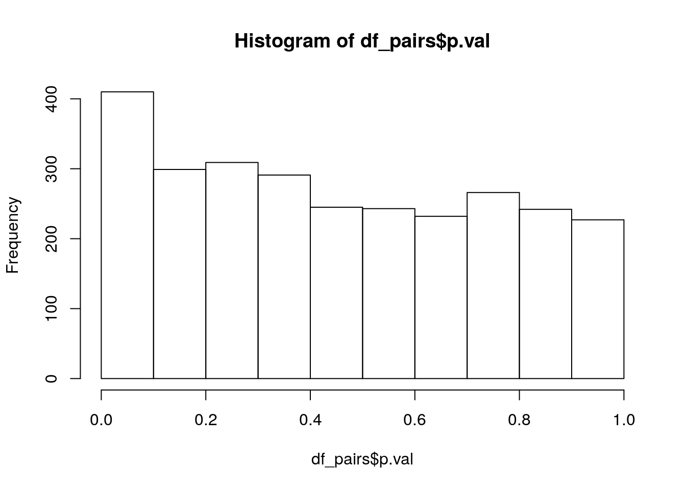
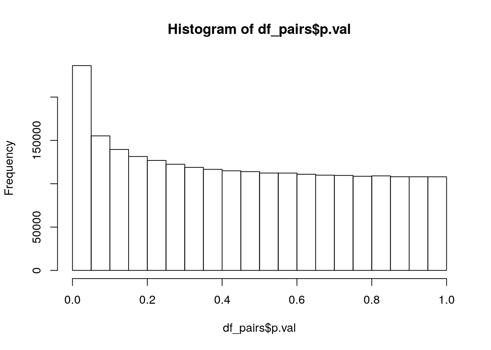

Last updated: 2021-05-17
Checks: 7 0
Knit directory: soybean_exploration/
This reproducible R Markdown analysis was created with workflowr (version 1.6.2). The Checks tab describes the reproducibility checks that were applied when the results were created. The Past versions tab lists the development history.
Great! Since the R Markdown file has been committed to the Git repository, you know the exact version of the code that produced these results.
Great job! The global environment was empty. Objects defined in the global environment can affect the analysis in your R Markdown file in unknown ways. For reproduciblity it’s best to always run the code in an empty environment.
The command set.seed(20210309) was run prior to running the code in the R Markdown file. Setting a seed ensures that any results that rely on randomness, e.g. subsampling or permutations, are reproducible.
Great job! Recording the operating system, R version, and package versions is critical for reproducibility.
Nice! There were no cached chunks for this analysis, so you can be confident that you successfully produced the results during this run.
Great job! Using relative paths to the files within your workflowr project makes it easier to run your code on other machines.
Great! You are using Git for version control. Tracking code development and connecting the code version to the results is critical for reproducibility.
The results in this page were generated with repository version 4fa4c7c. See the Past versions tab to see a history of the changes made to the R Markdown and HTML files.
Note that you need to be careful to ensure that all relevant files for the analysis have been committed to Git prior to generating the results (you can use wflow_publish or wflow_git_commit). workflowr only checks the R Markdown file, but you know if there are other scripts or data files that it depends on. Below is the status of the Git repository when the results were generated:
Ignored files:
Ignored: .Rhistory
Ignored: .Rproj.user/
Note that any generated files, e.g. HTML, png, CSS, etc., are not included in this status report because it is ok for generated content to have uncommitted changes.
These are the previous versions of the repository in which changes were made to the R Markdown (analysis/NBS_pairwise_tests.Rmd) and HTML (docs/NBS_pairwise_tests.html) files. If you’ve configured a remote Git repository (see ?wflow_git_remote), click on the hyperlinks in the table below to view the files as they were in that past version.
| File | Version | Author | Date | Message |
|---|---|---|---|---|
| Rmd | 4fa4c7c | Lyron Winderbaum | 2021-05-17 | Fix for GitHub file size limitation |
| html | 0a6fbe7 | Lyron Winderbaum | 2021-05-17 | Build site. |
| Rmd | a6180e7 | Lyron Winderbaum | 2021-05-17 | Pairwise Tests |
# # Cleanup and Global Settings
# rm(list = ls())
# if (!is.null(sessionInfo()$otherPkgs)) {
# invisible(lapply(paste0('package:', names(sessionInfo()$otherPkgs)),
# detach, character.only=TRUE, unload=TRUE))
# }
# graphics.off()
# options(stringsAsFactors = FALSE)
library(tidyverse)── Attaching packages ──────────────────────────────────────────────────────────────────────── tidyverse 1.2.1 ──✔ ggplot2 3.2.1 ✔ purrr 0.3.2
✔ tibble 2.1.3 ✔ dplyr 0.8.3
✔ tidyr 1.0.0 ✔ stringr 1.4.0
✔ readr 1.3.1 ✔ forcats 0.4.0── Conflicts ─────────────────────────────────────────────────────────────────────────── tidyverse_conflicts() ──
✖ dplyr::filter() masks stats::filter()
✖ dplyr::lag() masks stats::lag()# Read tidy data saved at the of initial_data_organisation.Rmd
load(file.path('data', 'pav_data.RData'))
# Reduce to NBS genes
nbs_table = pav_table[, c(TRUE, names(pav_table)[-1] %in% nbs$Name)]
# Merge on Yield and reduce to lines for which we have yield data
meta.df = subset(meta.df, !is.na(Yield))
nbs_table = merge(meta.df[, c('Line', 'Yield')], nbs_table)
# Reduce to genes with some decent level of variation
nbs_table = nbs_table[, c(TRUE, TRUE, colMeans(nbs_table[, -(1:2)]) <= 0.98 & colMeans(nbs_table[, -(1:2)]) >= 0.02)]
# # Proportion presence
# hist(colMeans(nbs_table[, -(1:2)]))
# Simplify gene names slightly
names(nbs_table) = sub('00.1.p$', '', names(nbs_table))
names(nbs_table) = sub('^GlymaLee.', 'GL', names(nbs_table))
names(nbs_table) = sub('^UWASoyPan', 'UWA', names(nbs_table))
# Move Line information into row.names
row.names(nbs_table) = nbs_table$Line
nbs_table$Line = NULLSo, if we restrict to NBS genes that occur in at least 2% and no more than 98% of individuals in our dataset this leaves us with 76 genes (noting we shorten GlymaLee to GL and UWASoyPan to UWA for convenience):
gene_nms = names(nbs_table)[-1]
gene_nms [1] "GL01G0309" "GL01G0884" "GL03G0420" "GL03G0421" "GL03G0454"
[6] "GL03G0455" "GL03G0456" "GL03G0457" "GL03G0459" "GL03G0706"
[11] "GL03G0707" "GL06G2286" "GL06G2289" "GL06G2291" "GL06G2293"
[16] "GL06G2305" "GL06G2306" "GL06G2326" "GL06G2328" "GL07G0600"
[21] "GL07G0702" "GL10G0346" "GL14G0220" "GL15G1986" "GL15G1992"
[26] "GL15G1993" "GL15G1995" "GL16G1111" "GL16G1113" "GL16G1115"
[31] "GL16G1308" "GL16G1752" "GL16G1755" "GL16G1756" "GL18G0757"
[36] "GL18G0763" "GL18G0766" "UWA00005" "UWA00022" "UWA00043"
[41] "UWA00155" "UWA00201" "UWA00202" "UWA00251" "UWA00276"
[46] "UWA00316" "UWA00326" "UWA00427" "UWA00670" "UWA00725"
[51] "UWA00772" "UWA00953" "UWA00975" "UWA01217" "UWA01253"
[56] "UWA01320" "UWA01330" "UWA01418" "UWA01530" "UWA01729"
[61] "UWA01876" "UWA01973" "UWA02043" "UWA02496" "UWA02799"
[66] "UWA03194" "UWA03230" "UWA03233" "UWA03261" "UWA03336"
[71] "UWA03340" "UWA03402" "UWA04314" "UWA04354" "UWA04967"
[76] "UWA05312" We we consider all possible pairwise interactions (of which there are 2850), and perform a t-test for the interaction term in these linear models with Yield as the response:
gene_nms = names(nbs_table)[-1]
df_pairs = data.frame()
for (i in 1:(length(gene_nms)-1)) {
for (j in (i + 1):length(gene_nms)) {
f = as.formula(paste('Yield ~', gene_nms[i], '*', gene_nms[j]))
m = lm(f, data = nbs_table)
int_nm = paste0(gene_nms[i], ':', gene_nms[j])
if (int_nm %in% row.names(summary(m)$coefficients)) {
df_pairs = rbind(
df_pairs,
data.frame(gene.1 = gene_nms[i], gene.2 = gene_nms[j],
p.val = summary(m)$coefficients[int_nm, "Pr(>|t|)"])
)
} else {
df_pairs = rbind(
df_pairs,
data.frame(gene.1 = gene_nms[i], gene.2 = gene_nms[j], p.val = NA)
)
}
}
}
df_pairs = df_pairs[order(df_pairs$p.val),]
df_pairs = na.omit(df_pairs)234 of these interactions cannot be computed (because there is no difference in gene presence/absence between the genes), leaving us with 2764 interactions. Lets have a quick look at the p-value distribution:
hist(df_pairs$p.val)
| Version | Author | Date |
|---|---|---|
| 0a6fbe7 | Lyron Winderbaum | 2021-05-17 |
sig_lvl = c(0.1, 0.05, 0.01)
rbind(sig_lvl,
p_vals = sapply(sig_lvl, function(x){return(sum(df_pairs$p.val < x))})) [,1] [,2] [,3]
sig_lvl 0.1 0.05 0.01
p_vals 410.0 234.00 83.00But we should apply a correction for multiple testing, using the Holm-Bonferroni method we get:
sig_lvl = c(0.1, 0.05, 0.01)
rbind(sig_lvl,
p_vals = sapply(sig_lvl, function(x){return(sum(df_pairs$p.val*(nrow(df_pairs):1) < x))})) [,1] [,2] [,3]
sig_lvl 0.1 0.05 0.01
p_vals 3.0 3.00 1.00So which are these three interesting interactions?
subset(df_pairs, p.val*(nrow(df_pairs):1) < 0.05) gene.1 gene.2 p.val
2524 UWA00725 UWA04967 3.520042e-06
1006 GL06G2293 UWA01973 4.094386e-06
2240 UWA00155 UWA01876 1.020067e-05We can try the same procedure for all genes, not just the NBS genes. But first lets just tidy the full data in the same way we tidied the NBS data.
pav_table = merge(meta.df[, c('Line', 'Yield')], pav_table)
# Reduce to genes with some decent level of variation
pav_table = pav_table[, c(TRUE, TRUE, colMeans(pav_table[, -(1:2)]) <= 0.98 & colMeans(pav_table[, -(1:2)]) >= 0.02)]The filter to only include genes with proportion of occurance between 2% and 98% reduces the 51415 genes down to just 2648 genes — a huge number of these genes are either very rare or very common, making it difficult to assess their imporance on Yield to to sample size limitations. Finish tidying:
# Simplify gene names slightly
names(pav_table) = sub('00.1.p$', '', names(pav_table))
names(pav_table) = sub('^GlymaLee.', 'GL', names(pav_table))
names(pav_table) = sub('^UWASoyPan', 'UWA', names(pav_table))
# Move Line information into row.names
row.names(pav_table) = pav_table$Line
pav_table$Line = NULLand we can repeat the pairwise test procedure:
gene_nms = names(pav_table)[-1]
# source(file.path('analysis', 'pairwsie_tests_all.R'))
df_pairs = read.csv(file.path('output', 'pairwise_tests_all.csv'))
df_pairs$gene.1 = gene_nms[df_pairs$gene.1]
df_pairs$gene.2 = gene_nms[df_pairs$gene.2]
df_pairs = df_pairs[order(df_pairs$p.val),]
df_pairs = na.omit(df_pairs)Of the 3,499,335 pairs of genes, 373,817 cannot compute interaction terms because of the two genes having exact overlap. This leaves 3,125,518 pairs for testing. Lets take a look at the p-value distribution:
hist(df_pairs$p.val)
| Version | Author | Date |
|---|---|---|
| 0a6fbe7 | Lyron Winderbaum | 2021-05-17 |
Nice, lookes like a clear addition between a uniform distribution and an exponential distribution, just what we would expect if there are some real interactions mixed in. Lets count the small p-values:
sig_lvl = c(0.1, 0.05, 0.01)
rbind(sig_lvl,
p_vals = sapply(sig_lvl, function(x){return(sum(df_pairs$p.val < x))})) [,1] [,2] [,3]
sig_lvl 0.1 0.05 0.01
p_vals 391570.0 236331.00 76505.00and adjust for multiple testing using the Holm-Bonferroni method:
sig_lvl = c(0.1, 0.05, 0.01)
rbind(sig_lvl,
p_vals = sapply(sig_lvl, function(x){return(sum(df_pairs$p.val*(nrow(df_pairs):1) < x))})) [,1] [,2] [,3]
sig_lvl 0.1 0.05 0.01
p_vals 84.0 61.00 33.00So which are these 37 interesting interactions significant at the 1% level after multiple test correction?
subset(df_pairs, p.val*(nrow(df_pairs):1) < 0.01) gene.1 gene.2 p.val
3097588 UWA02279 UWA02696 6.146775e-13
1542202 UWA00342 UWA00538 6.363480e-13
2024585 UWA00863 UWA01138 4.987603e-12
3189725 UWA02696 UWA04952 1.142622e-11
1732291 UWA00538 UWA02709 1.343754e-11
1623532 UWA00424 UWA02696 1.408472e-11
1428447 UWA00241 UWA01567 1.810912e-11
1038728 GL18G1234 UWA00380 7.721450e-11
1356040 UWA00182 UWA00538 9.987116e-11
1042318 GL18G1267 UWA03220 2.077257e-10
1040101 GL18G1234 UWA03220 2.603432e-10
2628157 UWA01537 UWA03107 2.879676e-10
2459484 UWA01367 UWA02285 2.956599e-10
2357075 UWA01224 UWA01345 3.966186e-10
2581604 UWA01489 UWA04190 6.680222e-10
134582 GL03G0315 UWA01036 6.977990e-10
1493252 UWA00298 UWA01985 7.364664e-10
1040945 GL18G1267 UWA00380 7.871351e-10
943086 GL17G1410 UWA01538 9.280403e-10
942572 GL17G1410 UWA00636 9.899005e-10
1368915 UWA00189 UWA01420 1.267221e-09
1480419 UWA00291 UWA00538 1.676407e-09
1026151 GL18G0922 UWA01693 1.959441e-09
1378575 UWA00201 UWA00220 2.090802e-09
1405736 UWA00223 UWA01138 2.826983e-09
738653 GL15G0651 UWA03178 3.051131e-09
1523367 UWA00318 UWA02285 3.115504e-09
1025597 GL18G0922 UWA00780 3.414061e-09
1427774 UWA00241 UWA00363 3.562766e-09
2226649 UWA01087 UWA01293 3.717602e-09
1940091 UWA00773 UWA02820 3.894434e-09
540811 GL09G1235 GL09G1453 3.896788e-09
1731950 UWA00538 UWA01863 4.026035e-09
sessionInfo()R version 3.6.3 (2020-02-29)
Platform: x86_64-pc-linux-gnu (64-bit)
Running under: Ubuntu 18.04.5 LTS
Matrix products: default
BLAS: /usr/lib/x86_64-linux-gnu/openblas/libblas.so.3
LAPACK: /usr/lib/x86_64-linux-gnu/libopenblasp-r0.2.20.so
locale:
[1] LC_CTYPE=en_AU.UTF-8 LC_NUMERIC=C
[3] LC_TIME=en_AU.UTF-8 LC_COLLATE=en_AU.UTF-8
[5] LC_MONETARY=en_AU.UTF-8 LC_MESSAGES=en_AU.UTF-8
[7] LC_PAPER=en_AU.UTF-8 LC_NAME=C
[9] LC_ADDRESS=C LC_TELEPHONE=C
[11] LC_MEASUREMENT=en_AU.UTF-8 LC_IDENTIFICATION=C
attached base packages:
[1] stats graphics grDevices utils datasets methods base
other attached packages:
[1] forcats_0.4.0 stringr_1.4.0 dplyr_0.8.3 purrr_0.3.2
[5] readr_1.3.1 tidyr_1.0.0 tibble_2.1.3 ggplot2_3.2.1
[9] tidyverse_1.2.1
loaded via a namespace (and not attached):
[1] tidyselect_1.1.0 xfun_0.10 haven_2.3.1 lattice_0.20-41
[5] colorspace_1.4-1 vctrs_0.3.1 generics_0.0.2 htmltools_0.4.0
[9] yaml_2.2.0 rlang_0.4.6 later_1.0.0 pillar_1.4.2
[13] withr_2.1.2 glue_1.3.1 modelr_0.1.5 readxl_1.3.1
[17] lifecycle_0.1.0 munsell_0.5.0 gtable_0.3.0 workflowr_1.6.2
[21] cellranger_1.1.0 rvest_0.3.4 evaluate_0.14 knitr_1.25
[25] httpuv_1.5.2 broom_0.5.2 Rcpp_1.0.3 promises_1.1.0
[29] backports_1.1.5 scales_1.0.0 jsonlite_1.6 fs_1.3.1
[33] hms_0.5.1 digest_0.6.23 stringi_1.4.3 grid_3.6.3
[37] rprojroot_1.3-2 cli_1.1.0 tools_3.6.3 magrittr_1.5
[41] lazyeval_0.2.2 crayon_1.3.4 whisker_0.4 pkgconfig_2.0.3
[45] xml2_1.2.2 lubridate_1.7.4 assertthat_0.2.1 rmarkdown_1.16
[49] httr_1.4.1 rstudioapi_0.10 R6_2.4.0 nlme_3.1-149
[53] git2r_0.26.1 compiler_3.6.3